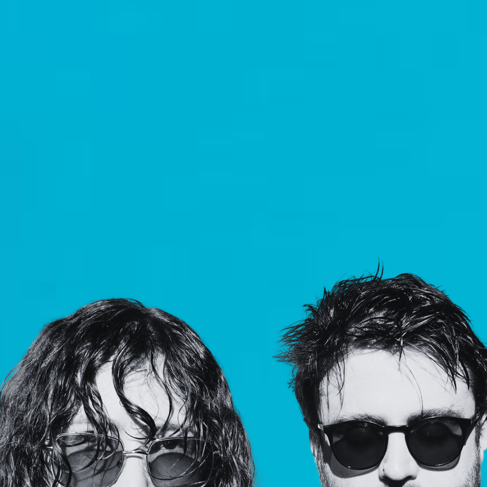
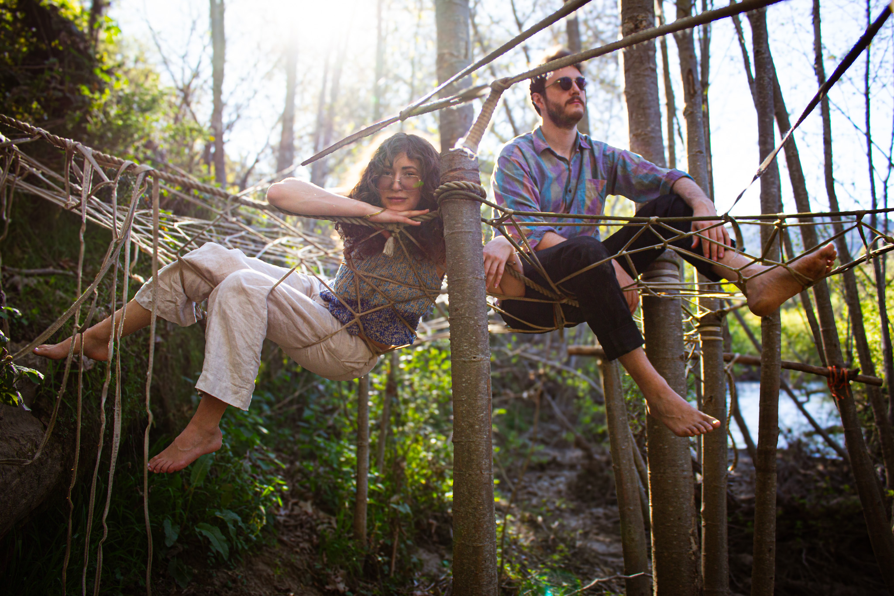
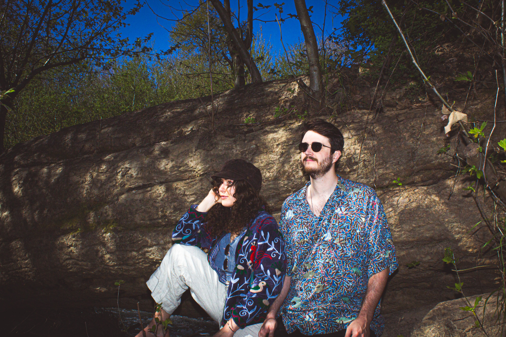

wibes

Bio...
Wibes met on a bus in summer 2022, heading to a rave in downtown Oslo. Hansine, acclaimed Norwegian filmmaker (1 ,2) and Avery, an American PhD student studying bioacoustics in Norway (1, 2) became fast friends and started trading demos. Together they excel at following creative impulses wherever they lead, resulting in novel and whimsical songs. The duo plans to release their first album in late 2026.
Links...
Music...
Press...
for "uendelig flow":
Da Da Da MusicIGGY Magazine
York Calling
for "øyestikker":
Zone NightsWe All Want Someone to Shout For
for "Mystic Whale Love":
Cities and MemoriesWe All Want Someone to Shout For
Podcart
Zone Nights
Photos...

